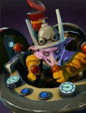
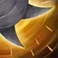

Whirling Death
Active ability: Activates on full mana
Timbersaw whirls extremely sharp edges, damaging enemies within 2 grids.
| ★ | ★★ | ★★★ | |
|---|---|---|---|
| Whirling radius | 300 | ||
| Whirling damage | 200 | 250 | 300 |
| Whirling tick | 0.3 | ||
| Cooldown (s) | 6 | 5 | 4 |
| Mana cost | 100 | ||
In the case that Rizzrack gets surrounded by the vines and plants of nightmares, he has an immediate chainsaw defense.
Stats
| ★ | ★★ | ★★★ | |
|---|---|---|---|
| Health | 750 | 1500 | 3000 |
| Mana | 100 | 100 | 100 |
| Armor | 7 | 7 | 7 |
| Magic resistance | 0% | 0% | 0% |
| Attack damage | 55–60 | 110–120 | 220–240 |
| Attack interval (s) | 1.4 | 1.4 | 1.4 |
| Attack range | 205 | 205 | 205 |
| Move speed | 500 | 500 | 500 |
 Goblin · Nanobots
Goblin · Nanobots
- (3) One random melee ally (attack range 250 or less) gets +10 armor and +20 HP regen.
- (6) All allies get +10 armor and +20 HP regen. This stacks with the (3) bonus on the chosen ally.
 Mech · Heart of the Machine
Mech · Heart of the Machine
Mechs receive +50% healing from all sources.
- (3) Win a round with at least one Mech still alive to get a Heart of the Machine (a free shop refresh).
- (6) The reward has a chance to be a Golden Heart (pick from 5 random Legendary pieces): 20% per courier level above 5 (level 6 = 20%, level 10+ = 100%). Otherwise you get a normal Heart.